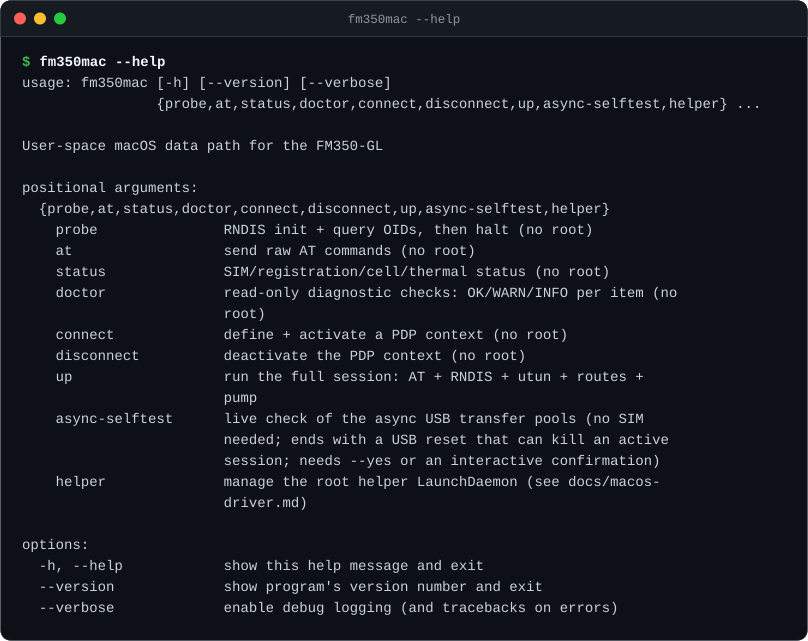
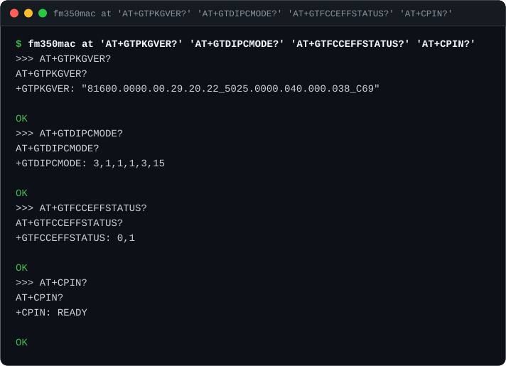
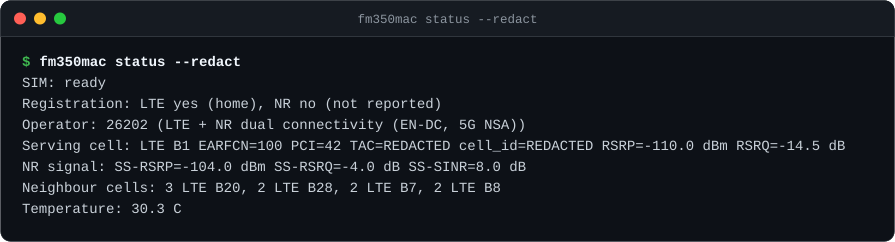
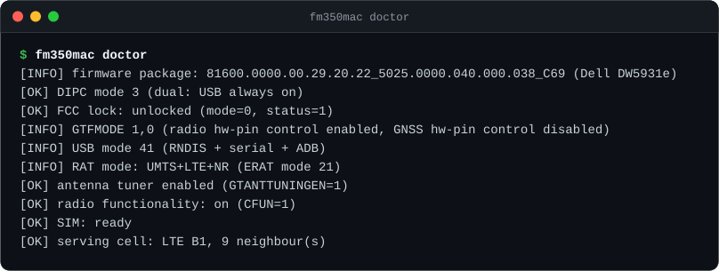
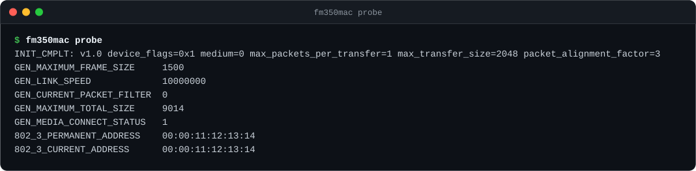
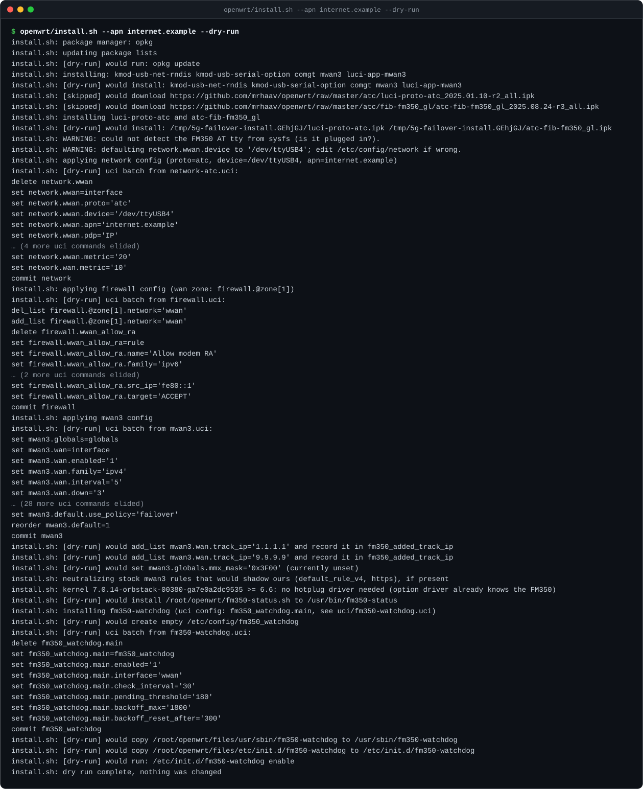
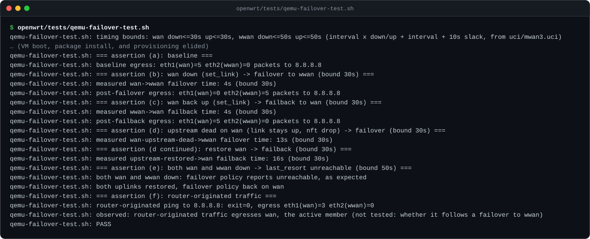

What's in the repo
Three parts, each usable on its own.
OpenWrt failover
Scripts that add the FM350-GL as a second WAN on an OpenWrt router and switch traffic to it with mwan3 when the wired line goes down. Verified in Docker, an AT-command modem emulator, and OpenWrt 24.10.8 under QEMU.
fm350mac
A user-space macOS driver: macOS has no driver for the modem's RNDIS network interface, so this talks to it over libusb and hands packets to a utun interface. No kernel extensions or SIP changes.
Dell DW5931e field guide
What the Dell OEM firmware changes, how to reach the module's internal root shell, and how to switch it out of "PCIe Advance Mode", which AT commands refuse to do.
Screenshot tour
Every image below is real command output, redacted (IMEI/IMSI/ICCID/serial
numbers, the serving cell's TAC and cell ID, and any MAC address that
isn't the FM350-GL's well-known placeholder) and rendered to SVG by
tools/screenshots.py.
The three modem shots only regenerate when the modem is actually
plugged in; the others need Docker or QEMU. Regenerate any time with
python3 tools/screenshots.py.

fm350mac --help — every subcommand on one screen.
fm350mac at 'AT+GTPKGVER?' 'AT+GTDIPCMODE?' 'AT+GTFCCEFFSTATUS?' 'AT+CPIN?' — a quick identity check: firmware, dual-IPC mode, FCC-lock state, SIM readiness.
fm350mac status --redact — SIM, registration, operator, serving cell, NR signal, neighbour cells and temperature. --redact masks cell IDs and TACs.
fm350mac doctor — the Dell DW5931e checks in one read-only run.
fm350mac probe — RNDIS init and OID queries, no root needed.
openwrt/install.sh --apn internet.example --dry-run — every uci command it would run, changing nothing (captured inside the OpenWrt Docker test image).
openwrt/tests/qemu-failover-test.sh — the end-to-end failover test in QEMU: baseline, failover, failback, and both-uplinks-down, all passing.Interactive demos
Two small, self-contained explainers. No backend, no tracking — just the logic from this repo, in the browser.
Failover timeline
What mwan3 does when the wired link fails, using the timings actually measured in the QEMU test.
wan active. LAN traffic egresses via the fibre link.
Simulation using timings measured in the QEMU test (openwrt/tests/qemu-failover-test.sh), not a live router: link-down failover 5 s / failback 4 s, upstream-dead failover 13 s / failback 16 s. Cutting the second uplink while already on backup shows the "both down" case mwan3 calls unreachable.
Will USB come up?
The FM350-GL's dual_ipc_mode and PCIe link state decide whether its USB interfaces are enabled, per the module's own /etc/init.d/usb.init.
USB ON
Exactly the module's logic: mode not in {1, 3} → USB off. Mode 1 with the PCIe link up → USB off. Otherwise → USB on. This is why a Dell DW5931e in PCIe Advance Mode (mode 1) still enumerates over USB in an M.2-to-USB adapter — there's no PCIe link to prefer — but goes USB-silent once it's back in a laptop's M.2 slot.